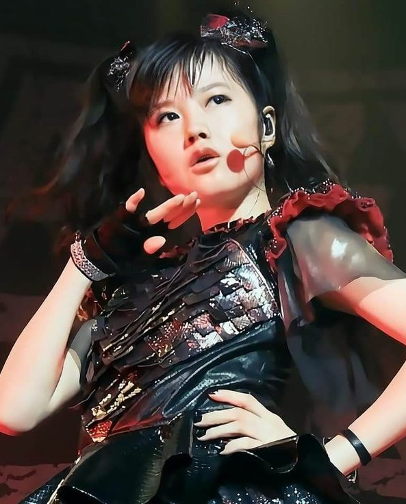

Adventure: Fellowship (ACF/C)
• Power: Pop Group Strike Team, slay demons, take the stage
• Weakness: demons in the woodwork
"We will eliminate the demon plague at any cost, and look good doing it."
The trio of Summer, Miho, and Eunbi form the pop sensation Death by Pop. As they tour the globe, bringing music to their fans, the pop stars use the cover of their music tour to track down demons around the world and slay them.
TAGS & STATUSES
• Backpack: disguise
• Statuses:THEMES
Origin: Skill or Trade (ABG/C)
• Power: Vibrant Singer, voice control, exude charm
• Weakness: steal the spotlight
"Music is in my blood."
Summer has loved singing ever since she was a child. Even with all the ups and downs of her life and career, including demon invasions, she could never quit being a songstress.Origin: Prodigious Ability (ABF/B)
• Power: Boisterous Gunslinger, gun-fu, Rhythm and Blues
• Weakness: overly attached to guns
"Saving the world, one chambered round at a time."
Aside from music, Summer is in love with the kick of a pistol and the smell of gunpowder. She wields a pair of beloved berretas, which she has affectionately named Rhythm and Blues, and refuses to part with them, even working them into her close-quarters combat.Adventure: Influence (ACE/B)
• Power: World-Renowned Pop Star, adoring fans, the music industry
• Weakness: attract unwanted attention
• Improve: 1
"I don't do this for myself; it's all for the fans."
Summer is best known as a member of the now-defunct pop group Fabulosity, but she's also had a successful solo career, starred in a couple movies, and hosted popular televised contest shows. She is a recognizable personality world-wide.Origin: Duty (AEF/C)
• Power: Dethrone the Pop Queen, shared history, unwavering determination
• Weakness: fear of betrayal
"I will send that bitch to hell, if it's the last thing I do."
Her best friend, the infamous Celeste Hargrave, signed her soul away to sit on the Hollywood throne as she does now. Since her friend can't be saved, Summer believes that it's her duty to end the demon inhabiting the husk of the pop queen.RELATIONSHIPS
• Miho: protective • Eunbi: have their back
Summer has taken to Miho like a protective big sister, even though she is capable of protecting herself. The personalities of Eunbi and Summer sometimes clash, but they fit well together more often than not.

TAGS & STATUSES
• Backpack: disguise
• Statuses:THEMES
Origin: Skill or Trade (ABG/D)
• Power: Precision Dancer, exact timing, analyze movements
• Weakness: need space to move
"I strive to be the best dancer in the world."
Ever since she was little, Miho had dreamed of being a dancer like the idols that she admired. Now that she is living her dream professionally, she puts everything she has into being the best she can be.Origin: Prodigious Ability (ACJ/C)
• Power: Resolute Blademaster, deflect projectiles, blend with shadows
• Weakness: helpless without a blade
"Perfection requires diligence and focus."
When one of her earlier music videos involved interacting with a katana, Miho instantly became enamored with the blade and began taking lessons in sword fighting on the side. She discovered that memorizing and executing sword strikes required a skill set similar to dancing, and she mastered the art in no time.Origin: Trait (AEG/C)
• Power: Quiet Beauty, capture hearts, adorable smile
• Weakness: stalked by creepy fans
"Beauty is only skin deep, but it's what I have."
Miho has the visage of a pretty Japanese maiden, both beautiful and adorable. While she is typically quiet and reserved, her expression lights up like a child when she gets excited.Origin: Past (AEG/D)
• Power: Pop-Metal Idol, heavy metal contacts, surprisingly hardcore
• Weakness: guilt of abandonment
"There must be a way to save my friends. There just has to be."
Miho had been one of the founding members of the pop-infused metal band Kinzoku no Aidoru at the young age of twelve. Then at the height of the band's popularity, they were attacked by demons and Miho barely escaped while her two bandmates, Satomi and Haruka, were forced to sign a demonic contract and become possessed. Unlike Summer, Miho refuses to believe that their change can't by reversed.RELATIONSHIPS
• Summer: appreciative • Eunbi: admiring
Miho appreciates the nurturing care that she receives from Summer, even if it's unwarranted, as she reminds Miho of her senpai Satomi. Eunbi is essentially everything that Miho wishes she could be.
TAGS & STATUSES
• Backpack: disguise
• Statuses:THEMES
Origin: Skill or Trade (ABG/A)
• Power: Harsh Rapper, intimidate, fast-talk
• Weakness: habitually unlady-like
"The truth hurts. Deal with it."
Before Eunbi became an idol, she was a street rapper who competed in underground rap battles. Though she's all glammed up now, she hasn't lost her edge in spitting bars that cut to the bone.Origin: Prodigious Ability (AFG/A)
• Power: Violent Martial Artist, blunt weapons, tactical awareness
• Weakness: collateral damage
"When they knock ya down, get back up and make them regret it."
As a pretty girl who hung out with rough crowds, Eunbi learned to handle herself. She also found that her fists were just as effective at channeling her anger as her music.Origin: Personality (ABI/C)
• Power: Cocky and Brash, embrace the chaos, strong-willed
• Weakness: reckless
"Step aside. I got this."
Whether as a defense mechanism or she truly believes she's just that good, Eunbi has a chip on her shoulder the size of a boulder. Unfortunately for her haters, she actually can back up all that talk.Origin: Circumstance (AEH/A)
• Power: Hunted by the Agency, hide in crowds, sense trouble
• Weakness: can't let guard down
"If it's gotta be them or me, it's gonna be me."
Her last agency, Moonlit Halo Entertainment, misjudged Eunbi as a potential mark when they tried to coerce her into signing a contract in trade of her soul. She killed the demonic manager in the ensuing scuffle and then fled South Korea. The agency is now out to eliminate her, using every idol on their roster to do it.RELATIONSHIPS
• Summer: work well together • Miho: amusing
Summer and Eunbi make a good team, like coworkers, and maybe someday they'll be more friendly than that, but not yet. Eunbi finds Miho to be entertaining as hell, loving how the young woman takes herself so seriously but is really just a cute little kid inside.
Marty Haynes: dependable manager, good at his job, goofy dork, can't handle danger
Marty is the manager for Death by Pop and is kind of a dork, though he tries to act cool. The women couldn't ask for a better person to manage their music careers, but he is occasionally a hindrance to the their other line of work since he's no good around violence or dangerous situations.
Last Stop Music Hall: strict policies, management-is-displeased-1
The small venue is surprisingly serious about adhering to their policies and the management is not pleased that the group keeps trying to circumvent them.